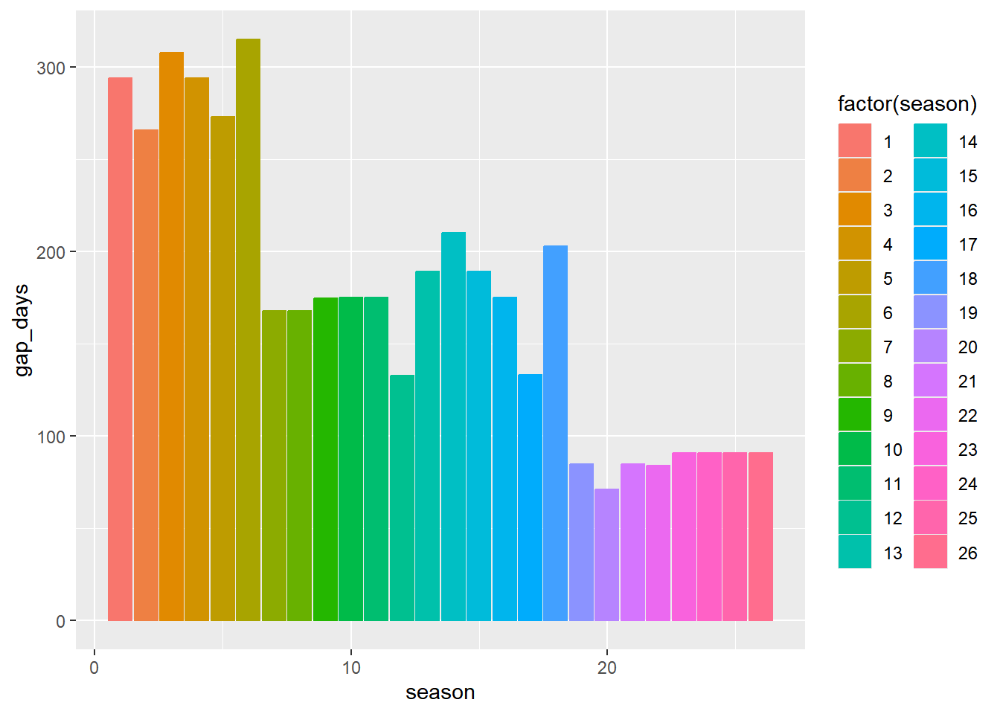
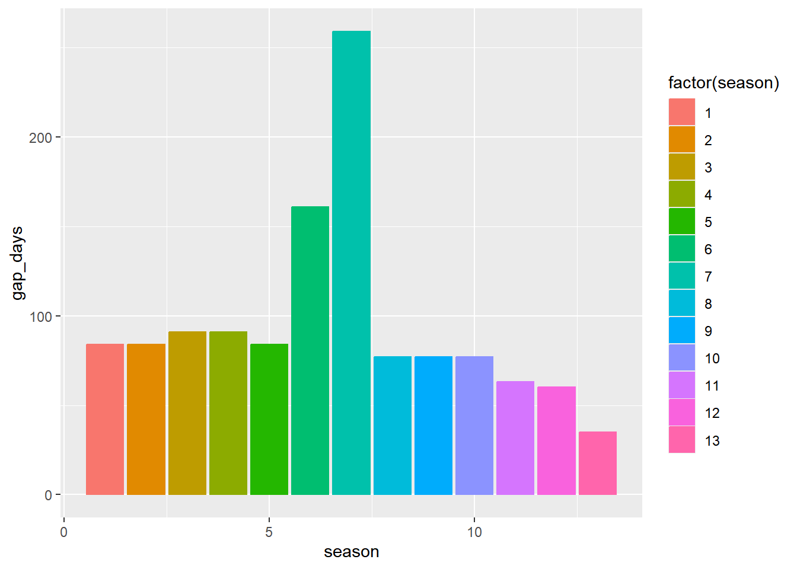
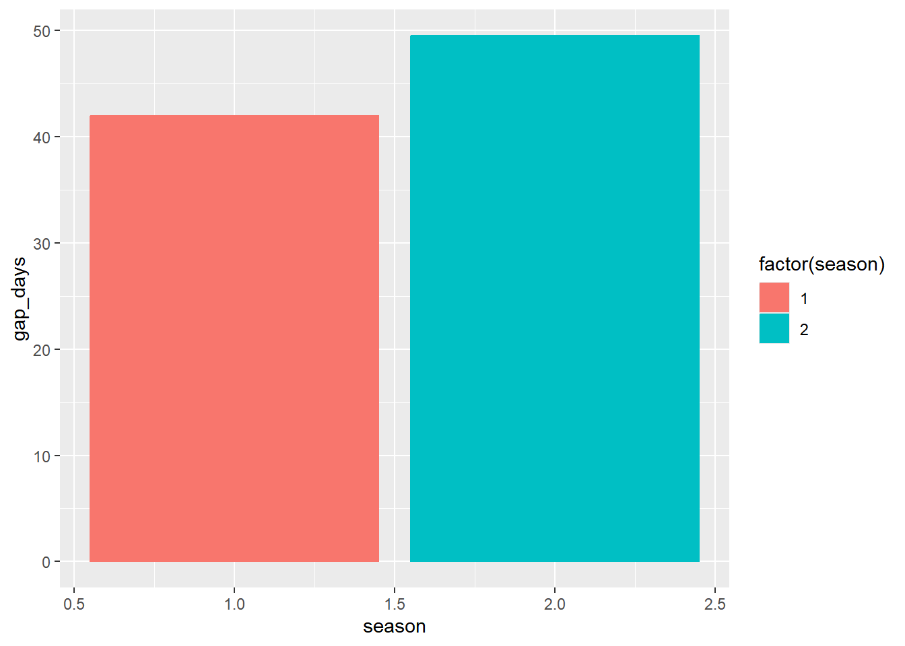
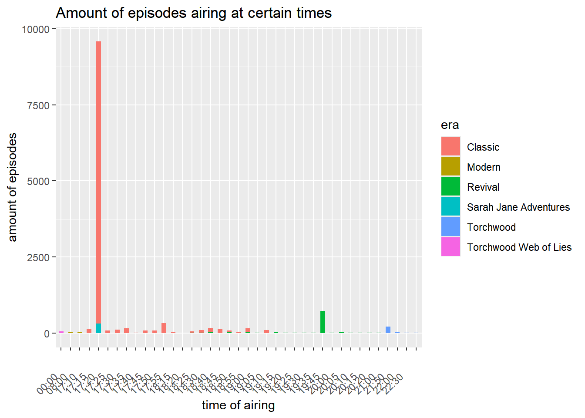

# Load neccessary libraries
library(tidyverse)
library(jsonlite)
library(rvest)
library(xml2)
library(knitr)
library(lubridate)Lab: List Processing
1 Data Source
JSON data files for this assignment were obtained from the TVMaze API for three different Doctor Who series as well as two different spin-offs.
- Dr. Who 2023-2025
- Dr. Who 2005-2022
- Dr. Who 1963-1996
- The Sarah Jane Adventures (2007-2020)
- Torchwood (2006-2011)
- Torchwood: Web of Lies (2011)
2 Warming Up
For this portion of the assignment, only work with the canonical Dr. Who files (drwho2023.json, drwho2005.json, drwho1963.json).
2.1 Parse the file
Add a code chunk that will read each of the JSON files in. Store the data in a drwhoYYYY object, where YYYY is the first year the series began to air. How are the data objects stored?
drwho2023 <- jsonlite::read_json("drwho-72724.json")
drwho2005 <- read_json("drwho-210.json")
drwho1963 <- read_json("drwho-766.json")The 2023 data is stored as a list of 16.
The 2005 and 1963 are stored as a large list with 153 elements and 700 elements, respectively.
Tibbles
The following two tibbles work fine and can be opened in the environment.
tibble_2023 <- read_json("drwho-72724.json") %>%
map_df(as_tibble)
tibble_2005 <- read_json("drwho-210.json") %>%
map_df(as_tibble)However, the 1963 json file is having problems being turned into a tibble as there are some entries with NULL image values.
tibble_1963 <- read_json("drwho-766.json") %>%
map_df(as_tibble)Error in `map()`:
ℹ In index: 14.
Caused by error in `.f()`:
! All columns in a tibble must be vectors.
✖ Column `image` is NULL.2.2 Examining List Data Structures
Create a nested markdown list showing what variables are nested at each level of the JSON file. Include an ‘episode’ object that is a stand-in for a generic episode (e.g. don’t create a list with all 700+ episodes in it, just show what a single episode has). Make sure you use proper markdown formatting to ensure that the lists are rendered properly when you compile your document.
Hint: The prettify() function in the R package jsonlite will spit out a better-formatted version of a JSON file.
Here is how the first entry in drwho2023 is contained
drwho2023[[1]]
id
url
name
season
number
type
airdate
airtime
airstamp
runtime
rating
rating$averageimage
image$mediumimage$originalsummary
_links
links$selflinks$self$hreflinks$showlinks$show$hreflinks$show$name
Is there any information stored in the list structure that you feel is redundant? If so, why?
rating
rating$averageshouldn’t be nested in ratingIt would be better to just have an un-nested average_rating variable instead
image and links
these can most likely be split into separate columns respectively
use nest() function to deal with lists >= 2
2.3 Develop A Strategy
Consider what information you would need to examine the structure of Dr. Who episodes over time (show runtime, season length, specials) as well as the ratings, combining information across all three data files.
Sketch one or more rectangular data tables that look like your expected output. Remember that if you link to an image, you must link to something with a picture extension (.png, .jpg), and if you reference a file it should be using a local path and you must also add the picture to your git repository.
Sketch goes here
What operations will you need to perform to get the data into a form matching your sketch? Make an ordered list of steps you need to take.
- Make an
era_information_datatable
- Use the html tvmaze url located in
links$show$hrefto scrape information such asEra_ID,Premier_Date,End_Date,Average_Runtime.
- Make an
episode_information_datatable
- Make an entry in the
drwhoXXXXjson files be mapped as a dataframe row. - Add an
Era_IDcolumn to be able to filter and know what episodes are from each era
- Make a
season_information_datatable
- With the
Era_IDandseasonvariables as a key, list theaverage_runtime,season_length,number_of_episodes, andnumber of specials
2.4 Implement Your Strategy
Add a code chunk that will convert the JSON files into the table(s) you sketched above. Make sure that the resulting tables have the correct variable types (e.g., dates should not be stored as character variables).
Print out the first 5 rows of each table that you create (but no more)!
Making the Era Information Table
Checking where the json urls for each show are
drwho1963[[1]]$`_links`$show$href
drwho2005[[1]]$`_links`$show$href
drwho2023[[1]]$`_links`$show$hrefMaking a list that contains all 3 eras / all 3 json files of our drwho data.
The id of the list is named according to the era the drwho show takes place in.
drwho_eras <- list(
"Classic" = drwho1963,
"Revival" = drwho2005,
"Modern" = drwho2023
)Scraping the show links:
- https://api.tvmaze.com/shows/766
- https://api.tvmaze.com/shows/210
- https://api.tvmaze.com/shows/72724
From each drwhoXXXX json file
Fixing the nodes function
- Basically I am getting the information I’d like to present
I believe the following variables are necessary to do an analysis on the structure of Dr. Who episodes over time.
fix_era_nodes <- function(i) {
tibble(era_id = i$id,
url = i$url,
name = i$name,
type = i$type,
status = i$status,
average_runtime = i$averageRuntime,
premiere_date = i$premiered,
end_date = i$ended,
rating = i$rating[[1]],
summary = i$summary,
links = i$`_links`$self[1])
}Extracting the necessary json links directly (without my get_show_links() function). I used map_dfr() instead. It is a bit overkill because it goes through all 700+ elements just to get 3 links.
era_links <- map_dfr(
drwho_eras,
~ tibble(json_link = .x[[1]]$`_links`$show$href),
.id = "era"
)
era_links# A tibble: 3 × 2
era json_link
<chr> <chr>
1 Classic https://api.tvmaze.com/shows/766
2 Revival https://api.tvmaze.com/shows/210
3 Modern https://api.tvmaze.com/shows/72724Creating the eras_table
era_table <-
map_dfr(
era_links$json_link,
~ fix_era_nodes(read_json(.x))
)
era_table <-
bind_cols(
era_links["era"],
era_table
)
era_table# A tibble: 3 × 12
era era_id url name type status average_runtime premiere_date end_date
<chr> <int> <chr> <chr> <chr> <chr> <int> <chr> <chr>
1 Classic 766 http… Doct… Scri… Ended 25 1963-11-23 1996-05…
2 Revival 210 http… Doct… Scri… Ended 48 2005-03-26 2022-10…
3 Modern 72724 http… Doct… Scri… To Be… 48 2023-11-25 <NA>
# ℹ 3 more variables: rating <dbl>, summary <chr>, links <named list>Cleaning the era_table column structure
# str(era_table)
era_table <-
era_table %>%
mutate(
era_id = as.factor(era_id),
era = as.factor(era),
type = as.factor(type),
status = as.factor(status),
premiere_date = ymd(premiere_date),
end_date = ymd(end_date)
)
# str(era_table)Era Table Presentation
kable(era_table)| era | era_id | url | name | type | status | average_runtime | premiere_date | end_date | rating | summary | links |
|---|---|---|---|---|---|---|---|---|---|---|---|
| Classic | 766 | https://www.tvmaze.com/shows/766/doctor-who | Doctor Who | Scripted | Ended | 25 | 1963-11-23 | 1996-05-12 | 8.4 | https://api.tvmaze.com/shows/766 | |
| Revival | 210 | https://www.tvmaze.com/shows/210/doctor-who | Doctor Who | Scripted | Ended | 48 | 2005-03-26 | 2022-10-23 | 8.3 | https://api.tvmaze.com/shows/210 | |
| Modern | 72724 | https://www.tvmaze.com/shows/72724/doctor-who | Doctor Who | Scripted | To Be Determined | 48 | 2023-11-25 | NA | 6.6 | https://api.tvmaze.com/shows/72724 |
Creating the Episode Information Table
I turned my fix_nodes() and revised it to work for fixing the episode nodes.
fix_episode_nodes <- function(i) {
tibble(episode_id = i$id,
url = i$url,
name = i$name,
season = i$season,
episode = i$number,
type = i$type,
air_date = i$airdate,
air_time = i$airtime,
air_stamp = i$airstamp,
runtime = i$runtime,
average_rating = i$rating$average,
summary = i$summary,
era_link = i$`_links`$show$href)
}Using map_dfr() along with my fix_nodes() function to create the episode information data in tabular form.
episode_information_data <-
drwho_eras[c("Classic", "Revival", "Modern")] %>%
map_dfr(~ map_dfr(.x, fix_episode_nodes), .id = "era")Quick format cleaning
# str(episode_information_data)
episode_information_data <-
episode_information_data %>%
mutate(
era = as.factor(era),
type = as.factor(type),
episode_id = as.factor(episode_id),
air_date = ymd(air_date),
air_stamp = ymd_hms(air_stamp),
air_time = hm(air_time)
)
# str(episode_information_data)Episode Information Table Presentation
kable(head(episode_information_data, 5))| era | episode_id | url | name | season | episode | type | air_date | air_time | air_stamp | runtime | average_rating | summary | era_link |
|---|---|---|---|---|---|---|---|---|---|---|---|---|---|
| Classic | 67360 | https://www.tvmaze.com/episodes/67360/doctor-who-1x01-an-unearthly-child-an-unearthly-child-part-one | An Unearthly Child (An Unearthly Child, Part One) | 1 | 1 | regular | 1963-11-23 | 17H 15M 0S | 1963-11-23 17:15:00 | 25 | 8.1 | https://api.tvmaze.com/shows/766 | |
| Classic | 67361 | https://www.tvmaze.com/episodes/67361/doctor-who-1x02-the-cave-of-skulls-an-unearthly-child-part-two | The Cave of Skulls (An Unearthly Child, Part Two) | 1 | 2 | regular | 1963-11-30 | 17H 15M 0S | 1963-11-30 17:15:00 | 25 | 7.2 | https://api.tvmaze.com/shows/766 | |
| Classic | 67362 | https://www.tvmaze.com/episodes/67362/doctor-who-1x03-the-forest-of-fear-an-unearthly-child-part-three | The Forest of Fear (An Unearthly Child, Part Three) | 1 | 3 | regular | 1963-12-07 | 17H 15M 0S | 1963-12-07 17:15:00 | 25 | 7.1 | https://api.tvmaze.com/shows/766 | |
| Classic | 67363 | https://www.tvmaze.com/episodes/67363/doctor-who-1x04-the-firemaker-an-unearthly-child-part-four | The Firemaker (An Unearthly Child, Part Four) | 1 | 4 | regular | 1963-12-14 | 17H 15M 0S | 1963-12-14 17:15:00 | 25 | 7.4 | https://api.tvmaze.com/shows/766 | |
| Classic | 67364 | https://www.tvmaze.com/episodes/67364/doctor-who-1x05-the-dead-planet-the-daleks-part-one | The Dead Planet (The Daleks, Part One) | 1 | 5 | regular | 1963-12-21 | 17H 15M 0S | 1963-12-21 17:15:00 | 25 | 7.6 | https://api.tvmaze.com/shows/766 |
Season Information Table
season_information_data <-
episode_information_data %>%
group_by(era, season) %>%
summarise(
amount_of_episodes = length(episode),
runtime_of_season = sum(runtime),
average_runtime_per_episode = sum(runtime)/length(episode),
average_season_rating = sum(average_rating)/length(episode)
)
kable(head(season_information_data))| era | season | amount_of_episodes | runtime_of_season | average_runtime_per_episode | average_season_rating |
|---|---|---|---|---|---|
| Classic | 1 | 42 | 1050 | 25 | 7.721429 |
| Classic | 2 | 39 | 975 | 25 | 8.146154 |
| Classic | 3 | 45 | 1125 | 25 | 7.546667 |
| Classic | 4 | 43 | 1075 | 25 | 8.081395 |
| Classic | 5 | 40 | 1000 | 25 | 8.520000 |
| Classic | 6 | 44 | 1100 | 25 | 8.577273 |
2.5 Examining Episode Air Dates
Visually represent the length of time between air dates of adjacent episodes within the same season, across all seasons of Dr. Who. You may need to create a factor to indicate which Dr. Who series is indicated, as there will be a Season 1 for each of the series. Your plot must have appropriate labels and a title.
episode_information_data <-
episode_information_data %>%
group_by(era, season) %>%
mutate(
gap_days = as.numeric(
difftime(air_stamp, lag(air_stamp), units = 'days')
))episode_information_data %>%
filter(era == 'Classic') %>%
ggplot(
aes(x = season,
y = gap_days,
fill = factor(season),
color = factor(season))
) +
geom_bar(stat = 'identity')Warning: Removed 32 rows containing missing values or values outside the scale range
(`geom_bar()`).
episode_information_data %>%
filter(era == 'Revival') %>%
ggplot(
aes(x = season,
y = gap_days,
fill = factor(season),
color = factor(season))
) +
geom_bar(stat = 'identity')Warning: Removed 13 rows containing missing values or values outside the scale range
(`geom_bar()`).
episode_information_data %>%
filter(era == 'Modern') %>%
ggplot(
aes(x = season,
y = gap_days,
fill = factor(season),
color = factor(season))
) +
geom_bar(stat = 'identity')Warning: Removed 2 rows containing missing values or values outside the scale range
(`geom_bar()`).
In 2-3 sentences, explain what conclusions you might draw from the data. What patterns do you notice? Are there data quality issues?
3 Timey-Wimey Series and Episodes
3.1 Setting Up
In this section of the assignment, you will work with all of the provided JSON files. Use a functional programming approach to read in all of the files and bind them together.
Loading in json files
sarah_jane_json <- read_json('sarahjane-970.json')
torchwood_659_json <- read_json('torchwood-659.json')
torchwood_26694_json <- read_json('torchwood-26694.json')Binding ALL json files together into one big list
timey_wimey_list <- list(
"Classic" = drwho1963,
"Revival" = drwho2005,
"Modern" = drwho2023,
'Sarah Jane Adventures' = sarah_jane_json,
'Torchwood' = torchwood_659_json,
'Torchwood Web of Lies' = torchwood_26694_json
)Then, use the processing code you wrote for the previous section to perform appropriate data cleaning steps. At the end of the chunk, your data should be in a reasonably tidy, rectangular form with appropriate data types. Call this rectangular table whoverse.
Scraping the links to create the new eras_data table
era_links <- map_dfr(
timey_wimey_list,
~ tibble(json_link = .x[[1]]$`_links`$show$href),
.id = "era"
)
era_links# A tibble: 6 × 2
era json_link
<chr> <chr>
1 Classic https://api.tvmaze.com/shows/766
2 Revival https://api.tvmaze.com/shows/210
3 Modern https://api.tvmaze.com/shows/72724
4 Sarah Jane Adventures https://api.tvmaze.com/shows/970
5 Torchwood https://api.tvmaze.com/shows/659
6 Torchwood Web of Lies https://api.tvmaze.com/shows/26694Pulling information I need from those links to make the table
era_table <-
map_dfr(
era_links$json_link,
~ fix_era_nodes(read_json(.x))
)
era_table <-
bind_cols(
era_links["era"],
era_table
)
era_table# A tibble: 6 × 12
era era_id url name type status average_runtime premiere_date end_date
<chr> <int> <chr> <chr> <chr> <chr> <int> <chr> <chr>
1 Classic 766 http… Doct… Scri… Ended 25 1963-11-23 1996-05…
2 Revival 210 http… Doct… Scri… Ended 48 2005-03-26 2022-10…
3 Modern 72724 http… Doct… Scri… To Be… 48 2023-11-25 <NA>
4 Sarah … 970 http… The … Scri… Ended 30 2007-01-01 2020-04…
5 Torchw… 659 http… Torc… Scri… Ended 53 2006-10-22 2011-09…
6 Torchw… 26694 http… Torc… Anim… Ended 3 2011-07-08 2011-09…
# ℹ 3 more variables: rating <dbl>, summary <chr>, links <named list>Creating the who_verse_episode table
who_verse_episode_data <-
timey_wimey_list[
c("Classic", "Revival", "Modern", "Sarah Jane Adventures", "Torchwood", "Torchwood Web of Lies")] %>%
map_dfr(~ map_dfr(.x, fix_episode_nodes), .id = "era")Quick column format cleaning
who_verse_episode_data <-
who_verse_episode_data %>%
mutate(
era = as.factor(era),
type = as.factor(type),
episode_id = as.factor(episode_id),
air_date = ymd(air_date),
air_stamp = ymd_hms(air_stamp)
# air_time = hm(air_time)
)3.2 Air Time
Investigate the air time of the episodes relative to the air date, series, and season. It may help to know that the watershed period in the UK is 9:00pm - 5:30am. - Military Times: 21:00 - 5:30 Content that is unsuitable for minors may only be shown during this window. What conclusions do you draw about the target audience for each show?
How can you explain any shows in the Dr. Who universe which do not have airtimes provided?
who_verse_episode_data %>%
ggplot(
aes(
x = air_time, y = episode, fill = era
)
) +
geom_bar(stat = 'identity', width = 0.5) +
# scale_x_discrete(guide = guide_axis(n.dodge = 4)) +
theme(axis.text.x = element_text(angle = 45, hjust = 2)) +
labs(
x = "time of airing",
y = 'amount of episodes',
title = 'Amount of episodes airing at certain times'
)
3.3 Another Layer of JSON
Use the show URL (_links > show > href) to read in the JSON file for each show. As with scraping, it is important to be polite and not make unnecessary server calls, so pre-process the data to ensure that you only make one server call for each show. You should use a functional programming approach when reading in these files.
Gettings the links in an easy to find/grab spot
I believe this is polite, as it is taking the each element in the big list (Classic, Revival, Modern…etc) and only taking the link to the show’s json file from the first entry in that element. So I think I’m making only one server call for each era/show.
era_links <- map_dfr(
timey_wimey_list,
~ tibble(json_link = .x[[1]]$`_links`$show$href),
.id = "era"
)
kable(head(era_links,5))| era | json_link |
|---|---|
| Classic | https://api.tvmaze.com/shows/766 |
| Revival | https://api.tvmaze.com/shows/210 |
| Modern | https://api.tvmaze.com/shows/72724 |
| Sarah Jane Adventures | https://api.tvmaze.com/shows/970 |
| Torchwood | https://api.tvmaze.com/shows/659 |
Process the JSON files using a functional approach and construct an appropriate table for the combined data you’ve acquired during this step (no need to join the data with the full whoverse episode-level data).
Pulling information I need from those links to make the table
era_table <-
map_dfr(
era_links$json_link,
~ fix_era_nodes(read_json(.x))
)
era_table <-
bind_cols(
era_links["era"],
era_table
)kable(head(era_table,5))| era | era_id | url | name | type | status | average_runtime | premiere_date | end_date | rating | summary | links |
|---|---|---|---|---|---|---|---|---|---|---|---|
| Classic | 766 | https://www.tvmaze.com/shows/766/doctor-who | Doctor Who | Scripted | Ended | 25 | 1963-11-23 | 1996-05-12 | 8.4 | https://api.tvmaze.com/shows/766 | |
| Revival | 210 | https://www.tvmaze.com/shows/210/doctor-who | Doctor Who | Scripted | Ended | 48 | 2005-03-26 | 2022-10-23 | 8.3 | https://api.tvmaze.com/shows/210 | |
| Modern | 72724 | https://www.tvmaze.com/shows/72724/doctor-who | Doctor Who | Scripted | To Be Determined | 48 | 2023-11-25 | NA | 6.6 | https://api.tvmaze.com/shows/72724 | |
| Sarah Jane Adventures | 970 | https://www.tvmaze.com/shows/970/the-sarah-jane-adventures | The Sarah Jane Adventures | Scripted | Ended | 30 | 2007-01-01 | 2020-04-19 | 7.5 | https://api.tvmaze.com/shows/970 | |
| Torchwood | 659 | https://www.tvmaze.com/shows/659/torchwood | Torchwood | Scripted | Ended | 53 | 2006-10-22 | 2011-09-09 | 8.1 | https://api.tvmaze.com/shows/659 |
What keys would you use to join this data with the whoverse episode level data? Explain.
I would use the
era,era_id, and/or even theera_links/linksvariable.That way, despite there being many season 1 episode 1’s, you would know exactly what show/era the row the data is telling you.
3.4 Explore!
Use the data you’ve assembled to answer a question you find interesting about this data. Any graphics you make should have appropriate titles and axis labels. Tables should be reasonably concise (e.g. don’t show all 900 episodes in a table), generated in a reproducible fashion, and formatted with markdown. Any results (graphics, tables, models) should be explained with at least 2-3 sentences.
If you’re stuck, consider examining the frequency of words in the episode descriptions across different series or seasons. Or, look at the episode guest cast by appending /guestcast/ to the episode URL and see whether there are common guests across different seasons.
Code goes here – once you output a result, you should explain it using markdown text, and then start a new code chunk to continue your exploration.